This Month in Rust GameDev #16 - November 2020
Welcome to the 16th issue of the Rust GameDev Workgroup's monthly newsletter. Rust is a systems language pursuing the trifecta: safety, concurrency, and speed. These goals are well-aligned with game development. We hope to build an inviting ecosystem for anyone wishing to use Rust in their development process! Want to get involved? Join the Rust GameDev working group!
You can follow the newsletter creation process by watching the coordination issues. Want something mentioned in the next newsletter? Send us a pull request. Feel free to send PRs about your own projects!
Table of contents:
- Rust GameDev Podcast #3
- Last Call for Rust GameDev Survey
- Game Updates
- Learning Material Updates
- Library & Tooling Updates
- Popular Workgroup Issues in Github
- Requests for Contribution
Rust GameDev Podcast #3

The third episode is an interview with Chris Parsons about procedural history generation, custom game engines, the business of indie games development and lessons learned from shipping his first title, Sol Trader.
Listen and Subscribe from the following platforms: Rust GameDev Podcast (simplecast), Apple Podcasts, Spotify, RSS Feed, Google Podcasts.
Last Call for Rust GameDev Survey
Our annual Rust Game Development Ecosystem Survey will be closed at the end of this week, 11. December 2020. It'll only take 10 minutes, and your responses help us better understand the state of our ecosystem and where we should try to focus our collective efforts.
Game Updates
A/B Street
A/B Street is a traffic simulation game exploring how small changes to roads affect cyclists, transit users, pedestrians, and drivers. Any city with OpenStreetMap coverage can be used!
Some of this month's updates:
- A new tool to explore 15-minute neighborhoods was started.
- Simpler process for importing new cities.
- Large internal refactoring for the GUI and initializing the simulation.
Veloren
Endless mountains to explore
Veloren is an open world, open-source voxel RPG inspired by Dwarf Fortress and Cube World.
In November, Veloren released 0.8! This is the largest version yet, with over 50k lines of code added. GamingOnLinux wrote an article about the release. You can see the full changelog here. Veloren also spoke at MiniDebConf #2, you can watch the recording here. In November, many improvements were made to the UI, with map and buff updates. During the 0.8 code freeze, many networking and combat bugs were fixed. The Veloren 0.8 release party took place on the 28th and saw a peak of 112 players online, doubling the previous record.
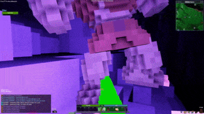 0.8 gameplay video
You can read more about specific topics from November:
- First Time Contributing
- Community Spotlight
- Performance Analysis
- 0.8 Release Schedule
- Veloren Trailer Competition
- Chest of Goodies
- Iced Transition
- Particle Improvements
- Animal Attacks and AI
- Veloren 0.8 Launch
- What People Are Saying About The Launch
- Idea Drop
November's full weekly devlogs: "This Week In Veloren...": #92, #93, #94, #95, #96.
In December, work will begin on 0.9. There are some discussions about larger refactors in the codebase. Many new developers have joined and are getting up to speed on contributing. Veloren will also reach its 100th blog post!
The start of an adventure
FBSim
FBSim running with default agents.
FBSim by Ian Tayler is a football/soccer game where you program the players using Rust and try to beat a team controlled by another AI.
You can follow the tutorial for implementing your own simple AI for FBSim, or you can look at the code directly, which can be found on the github repo. FBSim is at an early stage of development so issues and comments are welcome!
Discussions: /r/rust_gamedev
Antorum Online
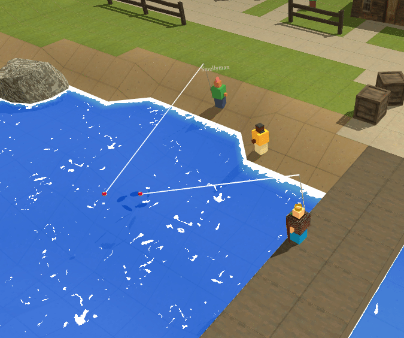
Antorum Online is a micro-multiplayer online role-playing game by @dooskington. The game server is written in Rust, and the official client is being developed in Unity.
Many important changes and new features were implemented this month. Players can now harvest plants and go fishing! There were also some tweaks to the world engine to support named zones on the map.
Akigi
Akigi butcher skill
Akigi is a WIP online multiplayer game.
In November, focus was put on gameplay. Prototyping of a butcher skill was done, which will allow for animals to be turned into raw resources. Support for rendering shadows in the MetalRenderer was added, bringing it one step closer to the WebGlRenderer. Lots of work was put into the ability to fire a bow. This spanned a few weeks, however enough functionality was added for it to feel like a solid part of gameplay. It still requires some polish, however, which will be the focus of the beginning of December.
Full devlogs: #091, #092, #093, #094, #095.
rymd
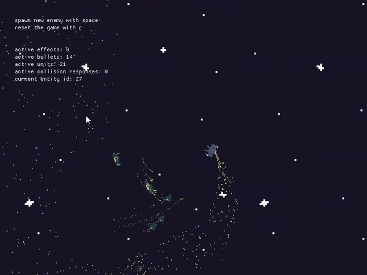
rymd by @_profan is a space shooter prototype made with macroquad.
Intended as a test platform for trying out rust for prototyping games and particularly for game AI programming purposes.
Recent updates include:
- Dynamic ship debris based on slicing source sprites into chunks.
- New hostile ship type, (ranger), which fires seeking missiles.
- New support ship type, (tech), which repairs friendly ships.
- Toggleable hitbox visualization.
- Still far too many particles.
Shotcaller
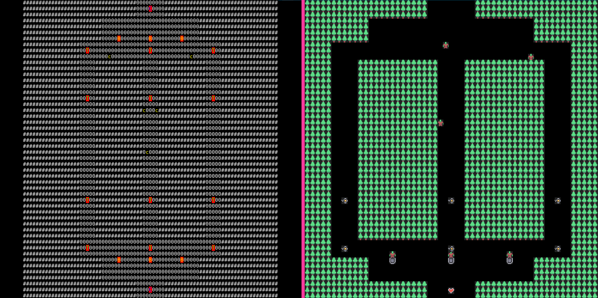 ASCII and sprites versions of Shotcaller interface.
Shotcaller is a moddable RTS/MOBA game made with bracket-lib and specs.
This month v0.3.1 version was released. Some of the updates:
- Kenney's micro-roguelike tileset was added.
- Leaders now have an item inventory.
- A handling system of stats effectors for items.
- New tutorials about creating leaders and items.
- A fully functional web version, including tileset.
Contributions welcome: try add a new Leader.
Space Shooter
The Space Shooter project is a game in development by Carlo Supina and Micah Tigley. It is a 2D "shoot-em-up" game that takes place in space and is inspired by games like Raiden and Binding of Isaac.
Exciting new additions have been made in November!
- Micah added a "paused" text overlay to provide a visual indication for when the game is paused.
- Carlo added a new armor system that gives a chance for destroyed enemies to drop armor consumables that can block a single hit from any damage source.
- Work on a new Missile Launcher enemy has begun!
{kind=link}
Game Off 2020
Game Off is an annual game jam, where participants spend the month of November creating games based on a secret theme.
Game Off 2020 theme was "MOONSHOT". Here are some of the games made with Rust:
-
"War of the Moons" by @FrancoisMockers made with bevy (source code).
Your goal is to conquer the planet, but it's not possible until you control all the moons. The end result is not completely what I wanted, but it was a nice occasion to try rapier for physics and lyon to draw shapes from bevy.
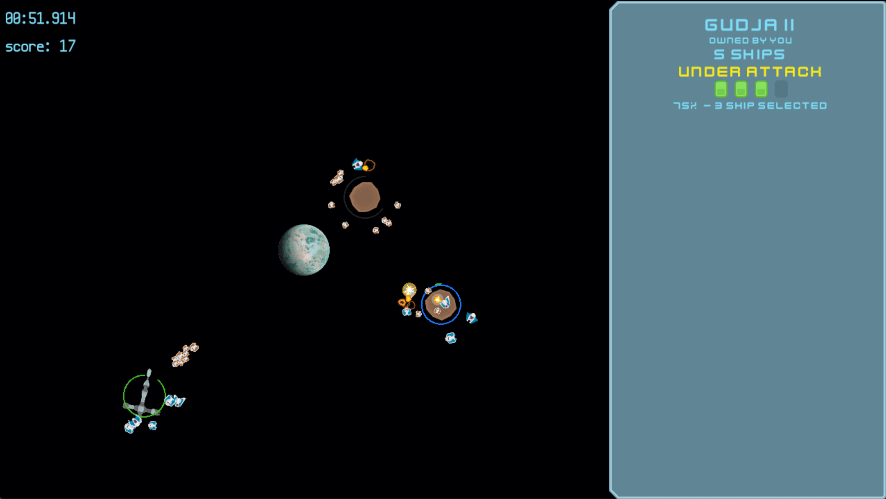
-
"Starlight 1961" by @grzi made with amethyst (source code).
A die and retry landing game where you control a spaceship, its fuel and health inside 10 different levels. Each level is made up of enemies (cannons, plasma doors, saw blades, etc.), bonuses (fuel, health) and coins.
@grzi also published a devlog post: "My journey into Github GameOff 2020".
-
"Everfight" by @SnoozeTime made with luminance (source code).
Battle hordes of human spaceships in order to reach the moon. Wave after wave, the enemy becomes stronger. Unlock infinite mode once you finished the game and try to beat your personal record.
Learning Material Updates
Hands-on Rust
"Hands-on Rust: Effective Learning through 2D Game Development and Play" by Herbert Wolverson is now in beta. The book teaches Rust through game development examples, and is targeted at readers who have some experience with writing code in other languages. It teaches beginner to intermediate-level Rust. It also teaches high-level gamedev concepts, notably Entity-Component System (ECS) theory.
After walking you through installing Rust, a few simple examples teach the language basics. Then you put these together to make "Flappy Dragon" - a simple Flappy Bird clone. The book then changes gear and begins to build a dungeon crawler (roguelike) with tile graphics. The first beta walks you through the basics, "Flappy Dragon" and making an ECS-based dungeon crawler skeleton - focused on teaching basic Rust, ECS composition and control flow. Beta 2 added health, a heads-up display, combat and win/lose conditions - focused on making the user comfortable with Rust's amazing iterator system. Beta 3 will add fields-of-view, more dungeon designs and map theming - focused on teaching trait use and creation.
Beta 1 launched November 11th, Beta 2 launched November 25th. The next beta is expected December 8th.
Why Rust is the Future of GameDev
@thefuntastic published an article detailing why Rust has the potential to be significant for the future of programming in games: the origins of the language, overview of the main technical features, why Rust's popularity grows, the state of the ecosystem, main challenges lying ahead, and links to some Rust gamedev resources and communities.
Discussions: /r/rust, hacker news
How to Build a Multiplayer Game
You can watch the recording here.
This month, @dns2utf8 gave a talk about how to build a multiplayer game with actix-web that people with any modern browser shipping JavaScript, Canvas Context2D and Websocket can play.
How coding a system with so many independently moving parts is less about the bits and bytes but more about the high-level capabilities rust offers. In this talk Stefan Schindler @dns2utf8 focused on how he designed the whole system from concept to implementation including hosting it on a CO2 neutral server.
You can play the MultiPlayer Snake game itself on mps.estada.ch.
Also, a follow-up text note was released.
ECS scheduler thoughts, part 1
@Ratys wrote an article about system schedulers in ECS. It contains
an overview of the scheduling problem itself, covers the constraints a solution
to it should consider, and dissects schedulers of Bevy engine and yaks as
examples.
Chess game in Rust using Bevy
 Chess gameplay
Chess gameplay
@guimcaballero published a tutorial on using Bevy 0.3 to make a Chess clone in 3d. Most of the concepts are explained along the way, from how to load meshes to how to select pieces and board squares, using bevy_mod_picking.
Learn Wgpu
Development of new tutorial content has slowed down due to wgpu still being in development. @sotrh has committed to continue maintaining the project through the coming version changes, and plans to add more new content when the API solidifies. He with the help of other contributors such as GitHub user @kanerogers worked through a series of issues to polish the repository before the content freeze. In addition to that he added a compute pipeline showcase and an imgui showcase.
In other news @sotrh has started a Patreon to help fund research and development on the Learn Wgpu site as well as other wgpu related projects.
You can learn more on the Learn Wgpu news page.
Library & Tooling Updates
cargo-mobile
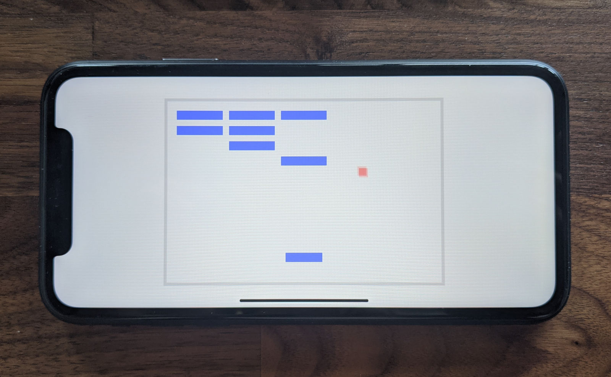 Bevy's Breakout example running on an iPhone XR
cargo-mobile is a tool created by Brainium Studios to simplify Rust mobile development. It generates Xcode and Android Studio projects, and provides handy commands for building and deploying apps to iOS and Android devices.
profiling
This month, profiling was released on crates.io. This crate provides a very
thin abstraction over instrumented profiling crates like puffin, optick,
tracy, and superluminal-perf.
Mark up your code like this:
#[profiling::function]
fn some_function() {
burn_time(5);
for i in 0..5 {
profiling::scope!("Looped Operation");
burn_time(1);
}
}
And get visualizations like this (optick and puffin shown):

rkyv
rkyv is a zero-copy deserialization framework for Rust. It's similar to FlatBuffers and Cap'n Proto and can be used for data storage and messaging.
It has a handful of features that make it stand out:
- No schema restrictions.
- HashMap support out of the box.
- Trait object support through the
rkyv_dyncrate. - Validation through the
bytecheckcrate, suitable for untrusted and potentially malicious data. - Safe mutable archives with pinning.
Reddit user vlmutolo also made a toy benchmark comparing rkyv against serde and bincode and found that rkyv had promising initial numbers:
serialize (bincode): 89 ns/iter
serialize (rkyv): 86 ns/iter
deserialize (bincode): 118 ns/iter
deserialize (rkyv): 16 ns/iter
A write-up on the architecture and internals of rkyv is also available.
Discussions: /r/rust (v0.1), /r/rust (v0.2)
assets_manager v0.4
assets_manager provides a convenient way to work with external files, making resources caching and hot-reloading easy and straightforward.
Version 0.4.0 was released this month, bringing loads of improvements.
- A
Sourcetrait, to load assets from anywhere. It makes the crate usable in WebAssembly. - Assets that can load other assets, with a transparent integration with hot-reloading. Using a manifest file has never been so easy!
- Improved performance.
- See the full changelog for more information.
Terra Mach
Terra Mach dashboard demo
Terra Mach is a mapping frontend system to build graphical interfaces for devices. It focuses on experiences around statistical data (graphs, diagrams), mapping, and user input. When it comes to user experience, elements a user interacts with are flexible enough to build many common experiences. Terra Mach is highly inspired by Flutter. It leverages graphics library Skia to enable highly performant 2D graphics.
glam v0.11.2
glam is a simple and fast linear algebra crate for games and graphics.
This month version 0.11.2 was released. There were a number of important changes since the last newsletter.
The vector accessor methods for setting and getting individual vector elements
were replaced with direct access support. This means that now instead of needing
to use .x(), .set_x(x) or .mut_x() = x the element may be accessed
directly via .x = x and so on.
The reason that this was not done originally was that some types are backed by
SIMD types which do not support direct access. For these types direct access is
now supported with Deref and DerefMut implementations.
The direct access support was added in version 0.10.1 along side the accessor methods. The accessor methods were deprecated in 0.10.2 and have been removed in 0.11.0.
winit
winit is a cross-platform window creation and event loop management library.
winit is looking for a new web platform maintainer! If you're interested, or know anyone who is, you can reach out via the tracking issue.
Fluffl
Fluffl is a WIP generic media layer for graphics, IO, and audio for desktop and the browser.
The only reason I wrote this crate at all was because I personally wanted to just have a generic interface were I can just write my OpenGL apps once and have that build to both desktop and the browser with little to no modification to source code.
Two demos are available atm:
- Basic graphics (using raw OpenGL via the "glow" crate) and audio demo: here.
- Breakout clone demo: here.
Discussions: /r/rust
Rapier

Rapier is a set of 2D and 3D physics engines for games, animation and robotics written in Rust.
This month the version 0.4.0 has been released with exciting new features:
- the ability to read contact and proximity information from the narrow-phase.
- the ability to lock some translations and/or rotations for a rigid-body without using joints.
The following demo shows examples of translation locking (on the blue cuboid) and rotation locking (full locking on the capsule, partial locking on the cuboid):
A cross-platform determinism bug appearing on MacOS with the new Apple M1 ARM processor has also been fixed.
The bevy_rapier plugin for the Bevy game engine has been updated to support all the aforementioned features. In addition, it supports:
- the automatic removal of rigid-bodies, colliders, and joints when the entity they are attached to are removed from the Bevy ECS.
- the ability to attach multiple colliders to a single rigid-body using Bevy Hierarchy.
Salva
Salva is a set of 2D and 3D particle-based fluids simulation engines for games and animation written in Rust.
Starting this month Salva 0.5.0 no longer supports nphysics for simulating rigid-bodies. Instead, it implements two-ways coupling with Rapier (see the demo).
In addition to the Rapier integration, it is now possible to query Salva to retrieve all the fluid particles located inside an AABB. This can be useful for, e.g., spawning new particles ensuring there isn't anything there already.
rib
Parsing a 3D model file and understanding the different links between bone matrices, keyframes and vertices is a task that can take a lot of time and motivation of the developer. On top of that, combining the different bone transform matrices for the current frame is often error prone.
rib is an attempt to tackle these problems and might help you save time. Current features of rib include:
- Support of collada files coming from the latest Blender version.
- Precomputation of the bone matrices expressed in the world space so that you just have to pass it to your shader for traditional GPU skinning.
- Interpolation between keyframes.
- (De)/serialization in binary thanks to bincode.
rib can be greatly extended, for example with the support of other format handling skeleton data, such as the glTF format. Contributions are more than welcome.
Kira
Kira by @tesselode is an audio library designed to help create expressive audio for games. It aims to fill the holes in many game engines' built-in audio APIs with features for creating seamless music loops and scripting audio events.
v0.2.0 is coming out soon with an Arrangements feature for creating complex pieces out of individual sounds, tween easing, panning support, and workflow improvements.
gfx-rs and wgpu
The gfx-rs team has published a post "The Big Picture" providing the overview of all projects in the works, and how they are connected to each other.
wgpu has moved from gfx-extras to the new gpu-alloc and gpu-descriptor
libraries by @zakarumych. These are backend-agnostic, which allows wgpu
to now depend on gfx-hal directly without intermediates. Patching gfx-rs
will now be easier, without the need to release every little change.
Finally, all the latest wgpu code has landed into Gecko, and new features and fixes are implemented in Firefox. That allows it to run most of the updated WebGPU samples.
Iced v0.2
The new Game of Life example, made with Iced
Iced is an experimental cross-platform GUI library focused on simplicity and type-safety. Inspired by Elm.
A new minor version was released this month containing a bunch of improvements:
- An OpenGL renderer powered by
glowandglutin. It is an alternative to the defaultwgpurenderer. - A trait-based approach to react to mouse and keyboard interactions in the
Canvaswidget. - Basic overlay support, allowing the superposition of interactive widgets on top of other widgets.
- A drop-down selector widget built on top of the overlay support.
- A widget that displays a QR code, powered by
qrcode. - Additional internal enhancements, like event capturing and a faster event loop.
Discussions: /r/rust
KAS v0.6 and KAS-text v0.2
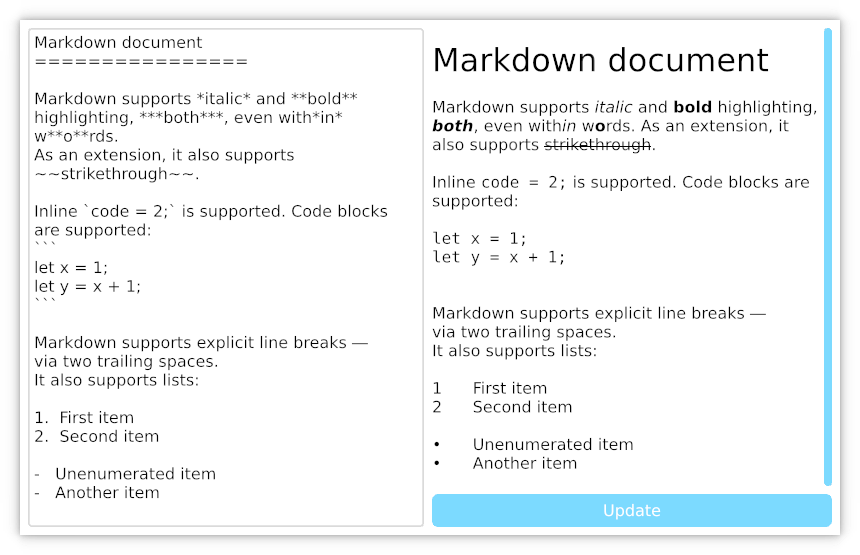 Markdown parsing demo
KAS by @dhardy is a general-purpose UI toolkit; its initial aim is "old school" desktop apps with good keyboard and touchscreen support. Unlike many modern immediate-mode UIs, KAS's widgets retain state, allowing minimal per-frame updates. KAS supports embedded WebGPU graphics now, and plans to support embedded usage and additional rendering systems.
KAS-text v0.2 saw a significant revision to its API, including support for rich text (bold, italic, underline, size and some layout improvements). KAS v0.6 pulls in those changes and adds a few fixes and QoL improvements.
Egui v0.4
Egui is a highly portable immediate mode GUI library in pure Rust. This month a v0.4.0 version was released with much-improved text editing, and many bugfixes. Check out an updated online demo.
Also, egui_web v0.4.0 was released, with a simple fetch API - online example.
miniquad
Miniquad running on raspberry pi 4 with a SPI screen.
miniquad is cross-platform windowing and rendering library.
This month KMS PR landed on miniquad. Now miniquad can run on without neither X11 or Wayland, right on the Linux kernel with KMS.
macroquad
Small editor footage.
macroquad is a cross-platform (Windows/Linux/macOS/Android/iOS/WASM) game framework built on top of miniquad.
This month macroquad got particle system editor aiming for simple 2d pixel-art style effects: try it out online here.
Dotrix
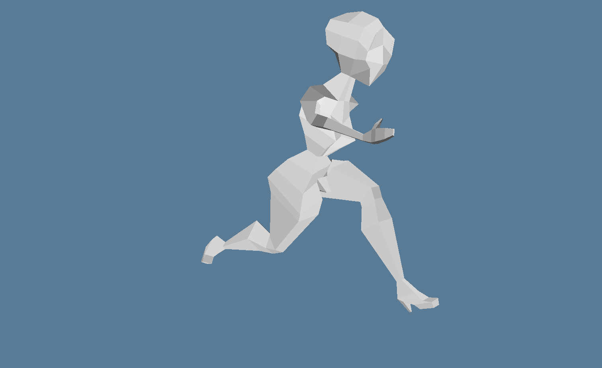 A screenshot of running low-poly female model
The goal of Dotrix is to become a 3D engine for the new RPG project. The engine is free and open source, delivering a set of common high-level features like skeletal animation, skybox, terrain, camera controlling, input mapping and many others. It is built on top of the wgpu with an ECS core which is a part of the engine.
Currently supported features:
- Linear ECS with systems as simple functions, that can have optional context.
- Import of textures from PNG files.
- Import of multiple assets from GLTF files (textures, meshes, skins and animations).
- FPS and delta time counters.
- Rendering of meshes and simple scenes with light and camera controls.
- Rendering of skeletal animations.
- 3 showcase demo applications.
Next in sprint:
- Input management and mapping;
- Full camera control with mouse;
- Skybox renderer.
Tetra
Tetra is a simple 2D game framework, inspired by XNA and Raylib. This month, versions 0.5.3 and 0.5.4 were released, with some frequently requested features:
- A
MeshAPI, allowing users to create arbitrary 2D geometry - Experimental support for high-DPI rendering
There has also been numerous bug fixes and documentation improvements. For full details and a list of breaking changes, see the changelog.
Old Gods
Old Gods is an WIP game engine meant for games targeting the web and SDL2. It reads Tiled map files into a specs based entity component system. Rendering is handled by HtmlCanvasElement or the built-in SDL2 renderer.
Discussions: /r/rust
ogmo3
ogmo3 is a Rust crate for parsing projects and levels created with Ogmo Editor 3. This month, version 0.1 was released, adding serialization support, and helper methods for unpacking layer data. The sample code has also been updated to show the new helpers in action.
ggez
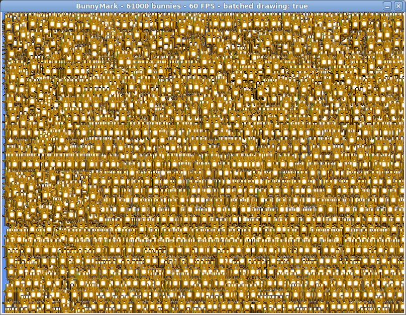 ggez bunnymark - 60,000 buns at 60 FPS
ggez is a 2D game framework inspired by Love2D. The project is chugging along getting everything prepared for a 0.6 release at the end of 2020, and a lot of work has been done in the last month:
- All major dependencies have been updated, including a long-overdue
update to
winit0.23. - Over a dozen pull requests have been merged, large and small.
- A bunch of old issues have been cleaned up.
Major features to look forward to include far better math performance, a
MeshBatch type, better ergonomics on Linux Wayland, and more. There's
lots of work still to be done though. A bunch of issues are out of date
and need triage, docs need to be proofread, and especially examples need
be updated and tested on every platform imaginable. Try out the devel
branch and give it a go!
rg3d
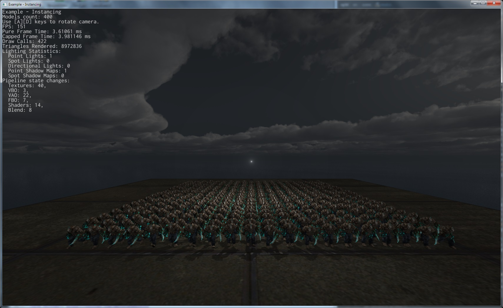 Geometry instancing demo.
rg3d is a game engine that aims to be easy to use and provide large set of out-of-box features. Some of the recent updates:
- Migrated to nalgebra from custom linear algebra.
- Replaced custom physics engine with Rapier.
- Implemented sound backend for macOS.
- Environment mapping - now objects can have reflections.
- Implemented geometry instancing - now you can render tons of objects with low overhead.
- Performance improvements.
- Added gobo for spot lights.
- Added CPU lightmapper - it is possible now to "bake" static lighting into a texture to improve performance.
Join the rg3d's Discord channel or follow Dmitry Stepanov on Twitter.
Another World Suite
debugger and resource viewer
Another World Suite by @c_botana is a Rust implementation of the "Another World" ("Out of This World" in USA) game engine, compiled to WebAssembly to run it in the web. It also includes a debugger and a resources viewer.
Discussions: Twitter
F1 Telemetry TUI
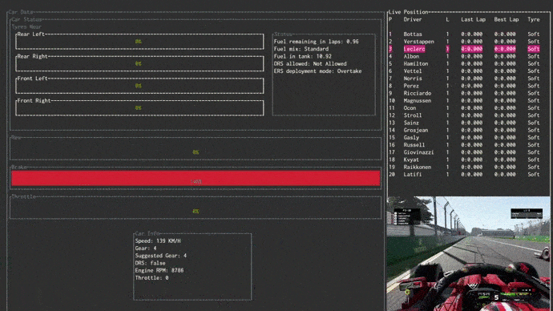
F1 Telemetry TUI by @aldidana is a terminal telemetry tool for F1 video games.
Discussions: Twitter
bevmnist
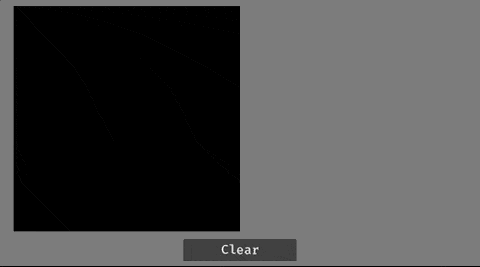 Running through all digits
bevmnist by @FrancoisMockers is a PoC for running inferences from a neural network in a game made with bevy, that can run in WASM (source code on github).
Using tract, the goal was to test running neural network inferences from a game. MNIST handwritten digits classification is the "hello world" of neural networks, and has small enough networks available in onnx format that can run in real time in WASM. This project also has github actions that will build and release a bevy game to itch.io for Linux, macOS, Windows and WASM.
Popular Workgroup Issues in Github
Requests for Contribution
- winit is seeking new maintainers.
- Embark's open issues (embark.rs).
- gfx-rs's "contributor-friendly" issues.
- wgpu's "help wanted" issues.
- luminance's "low hanging fruit" issues.
- ggez's "good first issue" issues.
- Veloren's "beginner" issues.
- Amethyst's "good first issue" issues.
- A/B Street's "good first issue" issues.
- Mun's "good first issue" issues.
- SIMple Mechanic's good first issues.
- Bevy's "good first issue" issues.
That's all news for today, thanks for reading!
Want something mentioned in the next newsletter? Send us a pull request.
Also, subscribe to @rust_gamedev on Twitter or /r/rust_gamedev subreddit if you want to receive fresh news!